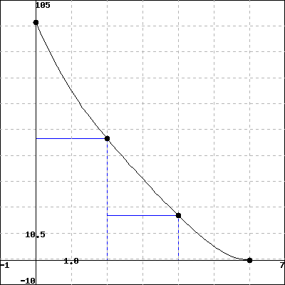

1.
A car comes to a stop six seconds after the driver applies the brakes. While the brakes are on, the following velocities are recorded:
| Time since brakes applied (sec) | 0 | 2 | 4 | 6 |
| Velocity (ft/s) | 96 | 49 | 18 | 0 |
Give lower and upper estimates (using all of the available data) for the distance the car traveled after the brakes were applied.
lower:
upper:
(for each, include )
On a sketch of velocity against time, show the lower and upper estimates you found above..
Solution.
SOLUTION
To find a lower estimate for the distance the car has traveled, we use the lowest velocity for each of the intervals \(0\le t\le 2\text{,}\) \(2\le t\le 4\text{,}\) and \(4\le t\le 6\) to calculate an estimated distance traveled in each interval. This gives
\begin{equation*}
\mbox{dist} = (49)(2) + (18)(2) + (0)(2) = 134.
\end{equation*}
Similarly, for the upper estimate, we take the maximum velocity for each interval, to get
\begin{equation*}
\mbox{dist} = (96)(2) + (49)(2) + (18)(2) = 326.
\end{equation*}
Graphically, each of the terms in these sums is the area of a rectangle, as shown outlined in blue in the figures below. The lower- and upper estimates are the sum of the areas of these rectangles. (Note that the height of the last rectangle for the lower estimate is zero, so it does not contribute to the sum.)
 |
|
| lower estimate | upper estimate |
(Click on the graphs to see a larger version.)